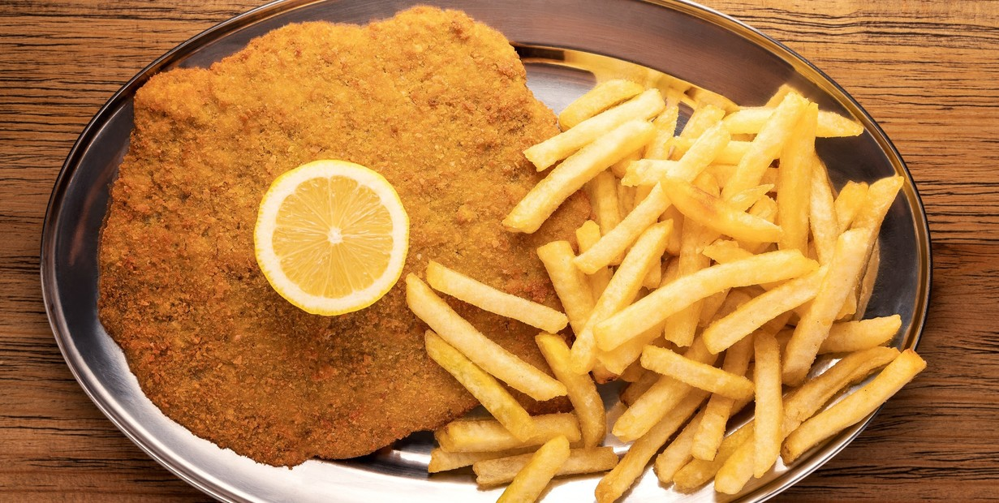

Empanadas de carne
Las empanadas de carne son uno de los grandes clásicos de la gastronomía nacional. Presentes en reuniones familiares, domingos de fútbol y celebraciones patrias, forman parte de la identidad culinaria de 🇦🇷 Argentina. Crujientes por fuera, sabrosas y jugosas por dentro, combinan carne especiada, vegetales y ese toque especial que cada casa le aporta.
- 12 tapas para empanadas
- 1/2 kg de carne picada
- 2 cebollas
- 2 dientes de ajo
- 1/2 pimiento morrón rojo
- 1 tomate
- 2 cucharadas de puré de tomates
- 1 puñado de aceitunas
- Pimentón
- Comino
- Sal
- Pimienta
En una olla con un poco de aceite caliente, agregar la cebolla picada y el morrón. Cocinar hasta que la cebolla esté transparente. Incorporar el ajo picado, junto con una pizca de sal y pimienta. Subir el fuego y añadir la carne picada de una sola vez. Revolver constantemente para que no se apelmace ni se pegue. Una vez que la carne esté sellada, sumar el tomate en cubos y el puré de tomates.
Condimentar con pimentón, comino, sal y pimienta a gusto. Mezclar bien, tapar parcialmente la olla (dejando una pequeña abertura) y cocinar durante aproximadamente 30 minutos, revolviendo cada tanto. Retirar del fuego y dejar enfriar el relleno en la misma olla. Una vez frío, agregar las aceitunas picadas y mezclar. En este punto se pueden incorporar ingredientes opcionales como huevo duro, papa en cubos o pasas de uva.
Colocar una porción de relleno en cada tapa, cerrar con un repulgue tradicional y, si se desea, pintar con huevo batido. Disponer en una placa y llevar a horno fuerte hasta que estén doradas.

Pastel de papa
El pastel de papas es uno de esos platos que abrazan. Cremoso, sabroso y bien casero, combina un puré suave y especiado con un relleno de carne jugoso que se funde en cada bocado. Es un clásico infaltable en las mesas familiares de 🇦🇷 Argentina, perfecto para los días frescos o para reunir a todos alrededor del horno..
- 1 kg de papas
- 1/2 kg de carne picada de ternera
- 1 cebolla
- 1/2 pimiento morrón
- 2 dientes de ajo
- 1 pastilla de caldo
- Ajo en polvo
- Pimentón
- 25 g de manteca
- 1 chorrito de leche
- Nuez moscada
- Aceite
- Sal
- Pimienta
Cortar las papas en cubos y hervirlas en abundante agua con sal hasta que estén tiernas. Mientras tanto, picar la cebolla, el ajo y el pimiento morrón. Calentar un poco de aceite en una olla o sartén y sofreír los vegetales hasta que la cebolla esté transparente.
Agregar la carne picada y cocinarla desarmándola con una cuchara para que quede suelta. Salpimentar e incorporar la pastilla de caldo, ajo en polvo y pimentón. Cocinar durante aproximadamente 15 minutos para que los sabores se integren bien. Una vez hervidas las papas, escurrirlas y hacer un puré en caliente agregando la manteca y un chorrito de leche. Condimentar con sal, pimienta y una pizca de nuez moscada.
En una fuente para horno colocar una base de puré, distribuir encima el relleno de carne (dejándolo entibiar unos minutos antes) y cubrir con otra capa de puré. Para alisar la superficie, mojar la cuchara en agua fría. Llevar a horno fuerte o al gratinador durante 15 a 20 minutos, hasta que la parte superior esté dorada y ligeramente crocante.

Locro
El locro es mucho más que un guiso: es historia, identidad y celebración. Protagonista indiscutido de las fechas patrias en 🇦🇷 Argentina, este plato criollo reúne maíz, porotos, carnes y verduras en una cocción lenta que transforma ingredientes simples en un manjar profundo y reconfortante.
- 250 g de porotos blancos (remojados desde la noche anterior)
- 250 g de maíz blanco partido (remojado desde la noche anterior)
- 1 chorizo colorado
- 1 chorizo criollo
- Cuerito de cerdo
- Pechito de cerdo
- Falda
- 200 g de panceta
- 3 cebollas
- 2 cebollas de verdeo
- 1 puerro
- 1/2 calabaza
- 1/2 morrón rojo (para la salsita)
- Sal
- Pimienta
- Comino
- Pimentón
- Ají molido
- Orégano
Remojar el maíz y los porotos desde la noche anterior. Cortar las carnes en trozos pequeños, las verduras en rodajas finas y la calabaza en cubos (reservar una parte rallada). Hervir aparte el chorizo, el chorizo colorado y el cuerito durante 10–15 minutos para desgrasar. Escurrir y reservar.
En una olla grande, dorar la panceta hasta que largue su grasa. Agregar cebolla de verdeo y puerro, y saltear. Incorporar los chorizos, el cuerito, el maíz y los porotos escurridos. Cubrir con agua limpia y cocinar 1½ hora (o 30 minutos en olla a presión).Sumar la calabaza en cubos, el pechito, la falda y los condimentos. Cocinar nuevamente 1½ hora (o 30 minutos más en olla a presión), revolviendo y agregando agua si hace falta.
Añadir la calabaza rallada y cocinar 10 minutos más para espesar.Para la salsa, saltear en abundante aceite el morrón, cebolla y cebolla de verdeo picados con ají molido, pimentón y orégano. Servir el locro caliente con la salsa por encima.

Milanesas de Pollo Caseras
Las milanesas de pollo son un clásico infaltable en la mesa argentina. Crujientes por fuera, tiernas por dentro y súper versátiles, se pueden acompañar con puré, ensalada, papas fritas o usarlas para un buen sándwich. Son simples, rendidoras y siempre una apuesta segura para cualquier día de la semana.
- 2 pechugas de pollo
- 2 huevos
- 1 taza de pan rallado
- 1/2 taza de harina
- 1 diente de ajo (opcional)
- Perejil picado (opcional)
- Sal y pimienta a gusto
- Aceite para freír o cocinar al horno
Cortar las pechugas en filetes del grosor deseado y, si se busca mayor terneza, golpear suavemente con un martillo de cocina. Condimentar los filetes con sal, pimienta, ajo picado y perejil. Dejar reposar unos minutos para que absorban sabor.
Pasar cada pieza primero por harina, luego por huevo batido y finalmente por pan rallado, presionando bien para que el empanado se adhiera. Para un resultado más crujiente, repetir el paso de huevo y pan rallado. Cocinar en aceite caliente hasta que estén doradas de ambos lados o llevar al horno a 200°C durante aproximadamente 20 minutos, girándolas a mitad de cocción.
Las milanesas de pollo son versátiles y pueden combinarse con distintos acompañamientos. Algunas opciones incluyen: papas fritas, ensalada, fideos, etc.
